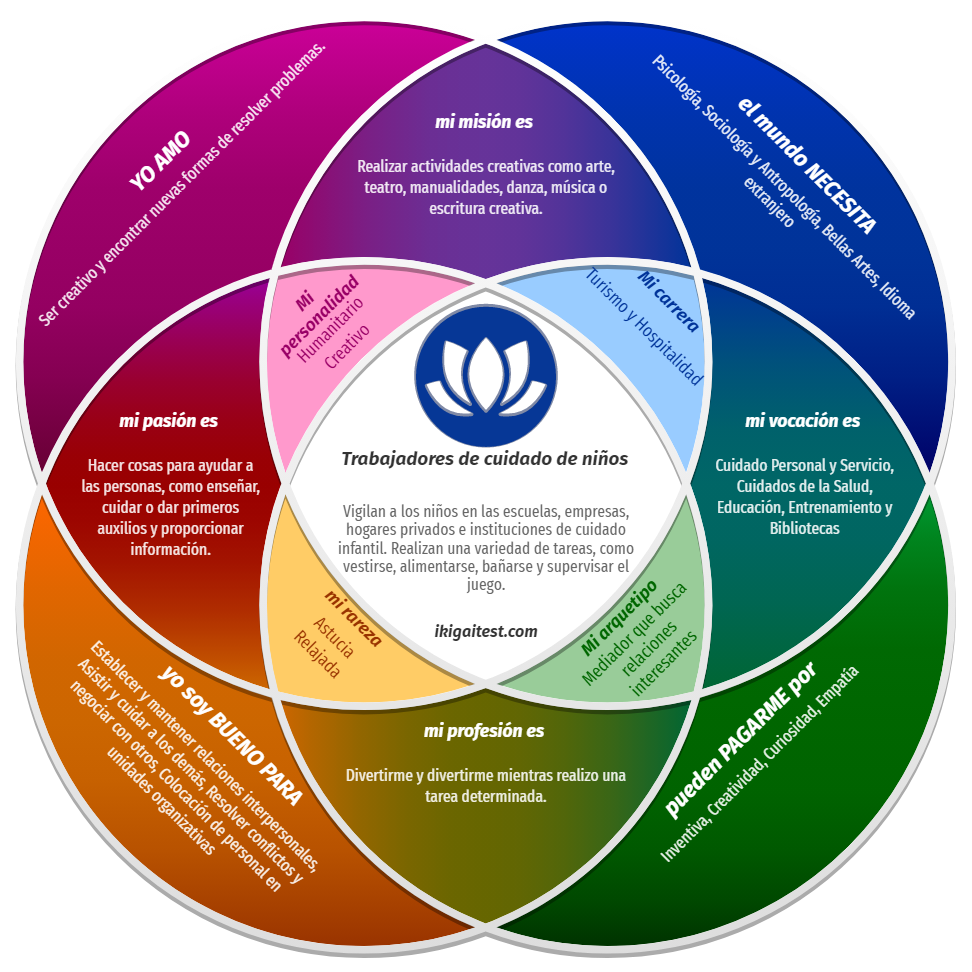

+


¡Bienvenidos! Soy una decodificadora de amplia formación y experiencia, una persona resiliente, emprendedora y luchadora. Además, tengo el honor de ser esposa y madre de 4 hijos, roles que nutren mi vida y me impulsan a seguir adelante. Mi viaje en el mundo de la sanación comenzó cuando acompañé a mi hermana en su proceso de convalecencia por una grave enfermedad. Fue entonces cuando conocí la biodecodificación, y algunos años más tarde, los registros akáshicos, una revelación que transformó mi perspectiva y marcó un punto de inflexión en mi vida. Me abrieron las puertas a un crecimiento personal profundo y duradero. Me brindaron una comprensión más profunda de mí misma y del universo que me rodea, otorgándome una guía invaluable para enfrentar desafíos, sanar heridas emocionales y avanzar hacia una vida más plena y consciente. Estas dos disciplinas, la biodecodificación y los registros akáshicos, no solo me han ayudado y enseñado en mi propio camino, sino que también me han permitido iluminar y aclarar los caminos de muchas otras personas. Mi propósito es compartir mis conocimientos y experiencias para ayudar a aquellos que buscan sanar, crecer y encontrar su camino hacia una vida más plena y consciente. Te invito a explorar este camino juntos, donde la sanación y el crecimiento son posibles para todos.
Ofrecemos una variedad de terapias para ayudarte en tu camino hacia el bienestar:
Contamos con una amplia experiencia en el campo de la biodecodificación y la apertura de registros akáshicos. Cursos de formación y 10 años de experiencia con numerosos consultantes para ayudarlos en su viaje de sanación y transformación.
"La sesión de biodecodificación con Andrea fue realmente transformadora. Me ayudó a entender y liberar emociones atrapadas que estaban afectando mi salud física y emocional. ¡Muy recomendado!"
- La Bibi de al lado
Para programar una sesión o hacer una consulta, por favor completa el formulario de contacto a continuación.
Mis redes Sociales